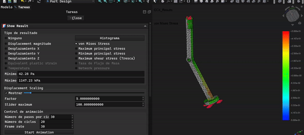
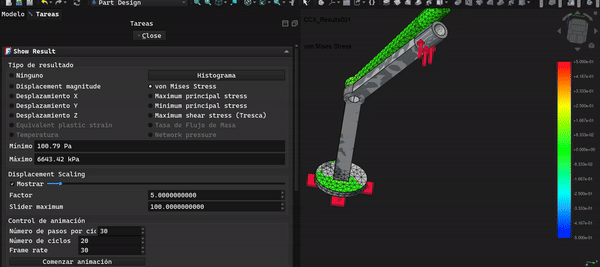

01 — Visualización
El diseño en movimiento
Animaciones de los análisis FEM mostrando la distribución de esfuerzos Von Mises bajo carga vertical y carga lateral máxima (2.4 N).

simulación vertical — 2.4 N · eje Z

simulación horizontal — 2.4 N · eje X

modelo isométrico — pata de paloma v4 · freecad 1.1.1